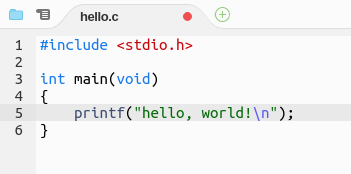
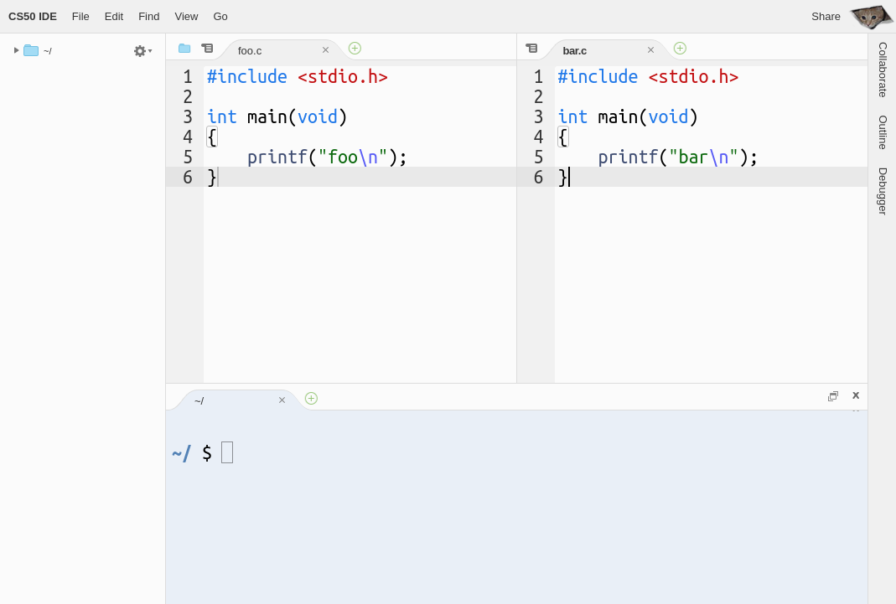
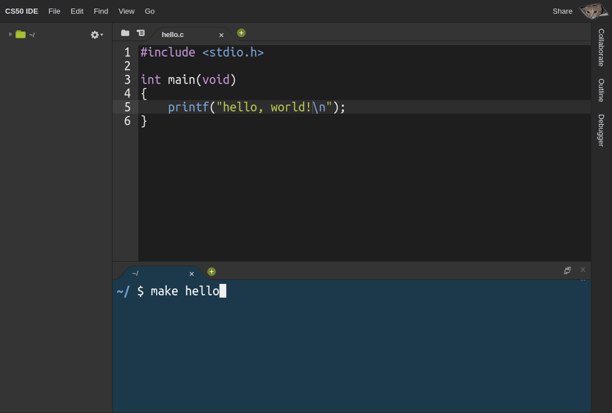

Online#
Warning
CS50 IDE is no longer supported. Here's how to copy files from CS50 IDE to CS50.dev.
Introduction#
CS50 IDE is a cloud-based Integrated Development Environment powered by AWS Cloud9 that features a cloud-based Ubuntu environment, a browser-based editor that supports syntax highlighting and word completion, a GUI-based GDB debugging, themes, customizable layouts, keyboard shortcuts, and many more features. Since it’s cloud-based, you can continue working on your problem sets even if you use a different computer!
Getting Started#
If you don’t already have one, create a GitHub account here.
Visit ide.cs50.io.
Click Sign in with GitHub then login into your GitHub account and authorize the CS50 IDE GitHub app if prompted.
Once you log in, you will automatically be forwarded to CS50 IDE! Hereafter, you may simply return to ide.cs50.io to log in and return to CS50 IDE, where all your files and settings are preserved.
Working with Files#
Creating Files#
There are multiple ways to create a new file in CS50 IDE:
Click File > New File.
Click on the little
 button atop any of the open panes and choose New File to open a blank file in that particular pane.
button atop any of the open panes and choose New File to open a blank file in that particular pane.From the file browser on the left, right-click or control-click on a directory and choose New File from the menu to create a blank file inside that directory, then double-click that file to open it.
Press Alt + N (on a PC) or ⌘ + N (on a Mac).
Saving Files#
When a file is open in a tab and you have some unsaved changes, CS50 IDE will show a red dot atop that tab, until you save your changes. Probably the easiest way to save a file is to press Ctrl + S (on a PC) or ⌘ + S (on a Mac), but you can also achieve the same by clicking File > Save (or File > Save As… if you want to save that as a new file), while you’re working on that file.

Downloading Files#
To download a file from your workspace to your local computer, simply navigate to the location of that file, in the file browser on the left, right-click on that file’s name, and choose Download.
To download all files in your home folder (i.e., ~/), click File > Download Project.
Uploading Files#
To upload a file from your local computer to your workspace:
Select a directory where you want your files to get uploaded into, by clicking on that directory in the file browser on the left. By default, this is going to be your
~/directory.Click File > Upload Local Files…, then choose either Select files or Select folder, depending on what you want to upload.
File Revision History#
While working on a file, you can easily undo changes by clicking Edit > Undo or by pressing Ctrl + Z (on a PC) or ⌘ + Z on your keyboard. Similarly, you can redo changes by clicking Edit > Redo or by pressing Ctrl + Shift + Z.
The CS50 IDE also keeps track of file revisions, in case you want to toggle between file revisions, without having to undo or redo many times. You can show the whole file revision history by clicking File > Show File Revision History, which will show a timeline similar to the following, on which you can click to jump to a particular version.

Working with Terminals#
Terminals allow you to interact with the underlying Ubuntu environment of CS50 IDE, using textual commands, to do all sorts of things, such as creating, copying, or moving files, compiling and running your programs, and more.
Opening New Terminals#
When CS50 IDE first starts, there should be a terminal tab open at the bottom by default. You can also open a new terminal tab in that or any other pane of your choice by clicking the button atop that pane, and choosing New Terminal. Alternatively, you may just hit Alt + T (on a PC) or Option + T (on a Mac).
By default, the current working directory (CWD) in a new terminal is your ~/ directory. You can always navigate to your desired directory using cd path/to/directory. To open a terminal in a different directory, navigate to that directory in your file browser, right-click (on a PC) or Ctrl-click (on a Mac) on the directory’s name, and choose Open Terminal Here.
Copying and Pasting#
You will probably need to copy and paste commands into terminal tabs to run them. By default, copying and pasting via menus will work inside CS50 IDE, but you may have to grant the IDE permission to see the contents of your clipboard first. You can either choose to grant the IDE that permission or use your keyboard to copy and paste instead by pressing Ctrl + C and Ctrl + V> (on a PC) or ⌘ + C and ⌘ + V (on a Mac).
Command History#
You will be often using the same commands over and over. Whether you don’t remember a particular command, or too lazy to type it again, you can leverage the command history that is kept by your terminals. You can scroll up and down through the list of commands by pressing your keyboard’s up or down arrow.
Additionally, you can search for a particular command by pressing Ctrl + R (on a PC) or ⌘ + R (on a Mac), then pressing the same key combination again to scroll through the matches, and finally Tab to select a particular match to modify it before running or Enter if you want to run it directly.
Clearing Terminals#
From time to time you will need to clear your terminal so that it’s easier to see what you’re doing. There are two main ways to do that
Press Ctrl + L (on a PC) or ⌘ + L (on a Mac). This doesn’t actually clear the terminal, but rather just scrolls down, so you can always scroll back up and see what got cleared if you want to.
Press Ctrl + K (on a PC) or ⌘ + K (on a Mac). This actually clears the terminal; you won’t be able to scroll back up and see what got cleared.
Troubleshooting#
If you want to force a program to quit, for example because it’s stuck in an infinite loop, press Ctrl + C (on a PC) or ⌘ + C (on a Mac). It may take several seconds for the program to respond.
As a last resort, in case the program won’t stop, you might need to forcibly kill it. Perhaps the easiest way to do that is to just close the terminal tab, clicking Close when prompted, and opening a new one.
Layouts and Themes#
Layouts#
The CS50 IDE is very customizable when it comes to laying out panes and tabs. You could very easily split a pane horizontally or vertically, by right-clicking (on a PC) or Ctrl-clicking (on a Mac) somewhere next to the button atop the pane you want to split and choosing Split Pane in Two Rows or Split Pane in Two Columns.

You could also move tabs between different panes by dragging and dropping a tab to the targeted pane or even to somewhere you want a new pane with that tab to be created.
Themes#
By default a theme called Cloud9 Day is selected, but if you prefer a dark theme, you can select it via View > Dark Mode.

Presentation Mode#
CS50 IDE also provides Presentation Mode in which the user interface is even more simplified and font sizes are larger. You can toggle that mode via View > Presentation Mode.
How to Copy Files from CS50 IDE to CS50.dev#
Download Files from CS50 IDE#
In your CS50 IDE terminal, run the following command to change terminal location to your home directory:
cd
Then run the following command to create a folder named migration:
mkdir migration
Move the files and folders that you want to copy over to CS50.dev to the migration folder that you just created. You move files and folders via the GUI in the file tree on the left-hand side of CS50 IDE, or use the mv command if comfortable with a command line.
Then, right-click (or control-click) the migration folder and click Download to download the folder as a Zip file to your computer. Depending on the file’s size and your internet speed, the downloading process might take a few minutes or more.
Upload Files to CS50.dev#
In your CS50.dev terminal, run the following command:
cd
Then, right-click (or control-click) anywhere in the left-hand Explorer sidebar and click Upload…*; a file dialog will prompt you to choose files to upload. Choose migration.zip that you just downloaded from CS50 IDE in order to upload it. Depending on the file’s size and your internet speed, the uploading process might take a few minutes or more.
Once the upload process is complete, run the following command to unzip the Zip file:
unzip migration.zip
Your files downloaded from CS50 IDE should now be in the migration folder, and you can execute the below to view the files that you just migrated:
ls migration
Reporting Problems#
If having any problems with CS50 IDE, please contact sysadmins@cs50.harvard.edu with all the necessary information about the problem, and how to replicate it, attaching screenshot(s) if need be!